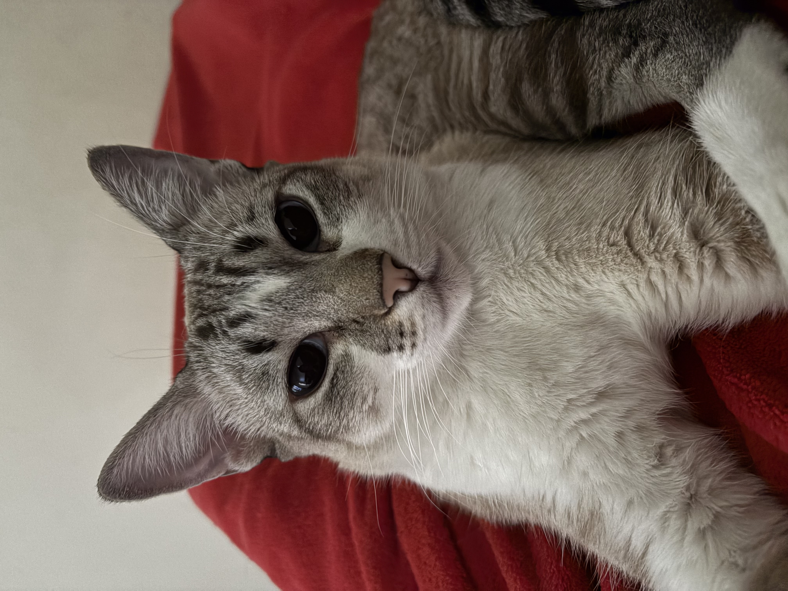
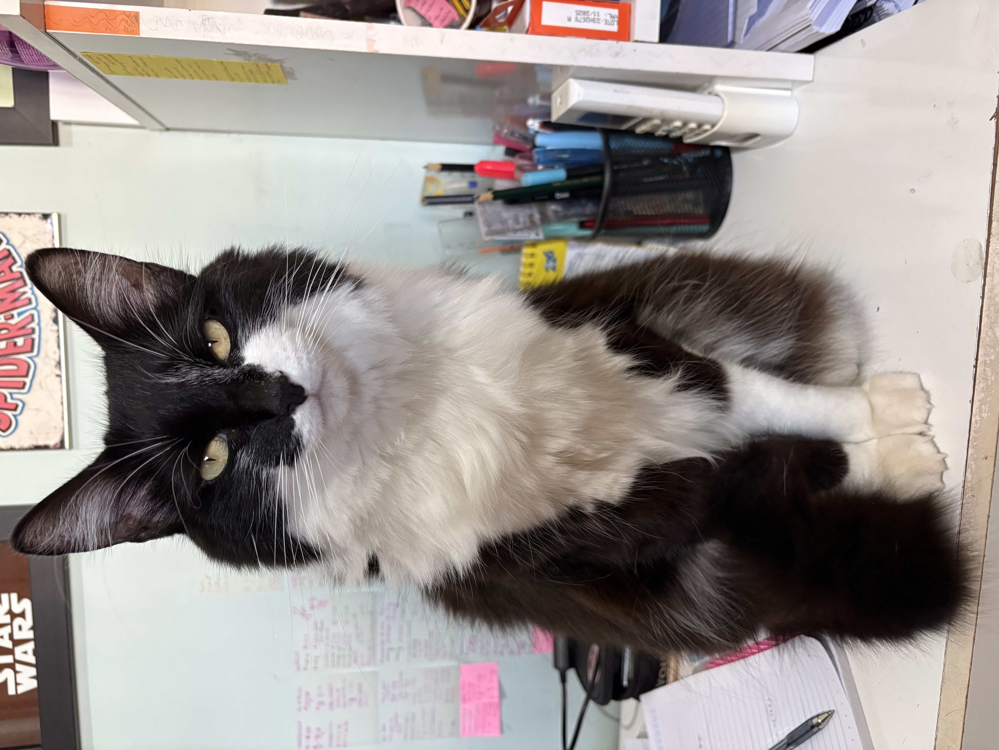
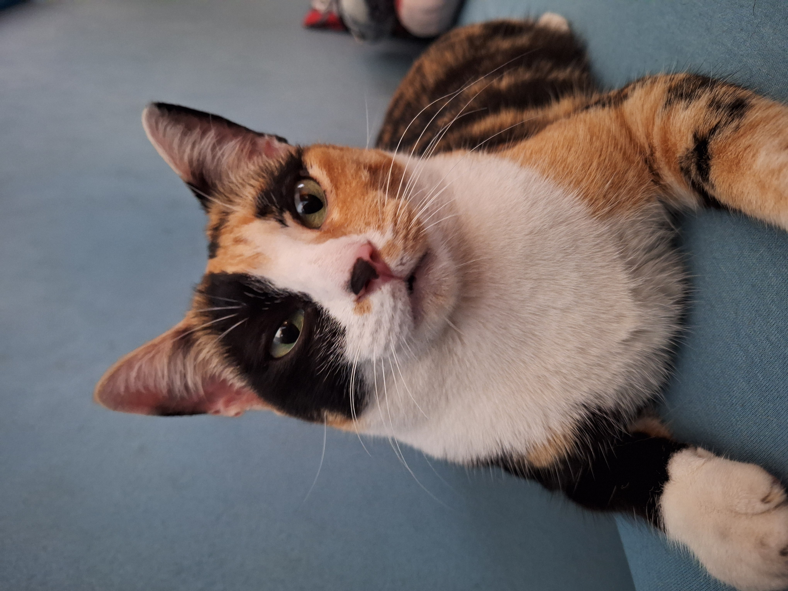

Olá! Me chamo Gabriela Giglio e tenho 17 anos anos. Sou estudante do curso técnico em Desenvolvimento de Sistemas no SESI, moro atualmente em Mococa-SP.
Tenho três gatas que são muito especiais para mim: a Luna, a Nina e a Francisca. Elas fazem parte do meu dia a dia e tornam minha rotina mais alegre e divertida. Gosto de passar tempo com elas, cuidar delas e aproveitar os momentos de carinho e brincadeiras, pois acredito que os animais trazem companhia, conforto e deixam a vida mais leve.



Interesses
Gosto de assistir a filmes de diferentes gêneros, especialmente aqueles que apresentam histórias envolventes e personagens marcantes, além de apreciar como o cinema desperta emoções e diferentes perspectivas sobre o mundo. Meus filmes preferidos são "Before Sunrise", "Sing Street" e "The Shawshank Redemption", que me inspiram e me fazem refletir sobre a vida e as relações humanas.
A leitura também faz parte dos meus interesses, já que os livros ampliam meu conhecimento, estimulam minha imaginação e contribuem para o desenvolvimento do pensamento crítico. Esses hobbies fazem parte do meu dia a dia e refletem minha curiosidade e vontade de aprender continuamente.
Também gosto de ir à academia, pois me faz sentir bem, ajuda a cuidar da minha saúde e é uma forma de manter uma rotina.
Objetivos
Um dos meus maiores objetivos é concluir o curso técnico em Desenvolvimento de Sistemas e dar continuidade aos meus estudos. Quero fazer faculdade de Engenharia de Materiais, uma área pela qual tenho muito interesse, e planejo me mudar para São Carlos para estudar na USP ou na UFSCar. Sei que esse caminho vai exigir muito esforço, dedicação e foco, mas acredito que todo esse empenho vai valer a pena. Espero crescer tanto profissionalmente quanto pessoalmente durante essa nova etapa e construir uma carreira da qual eu tenha orgulho.